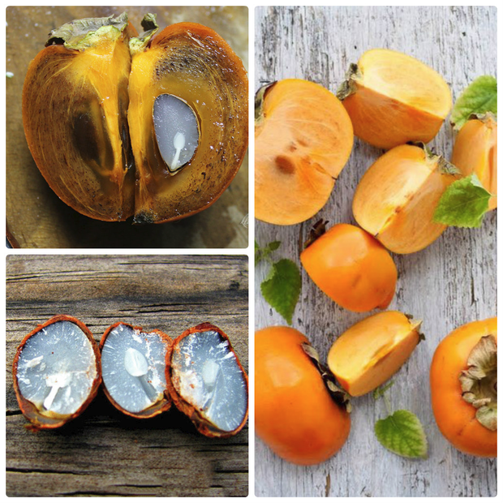
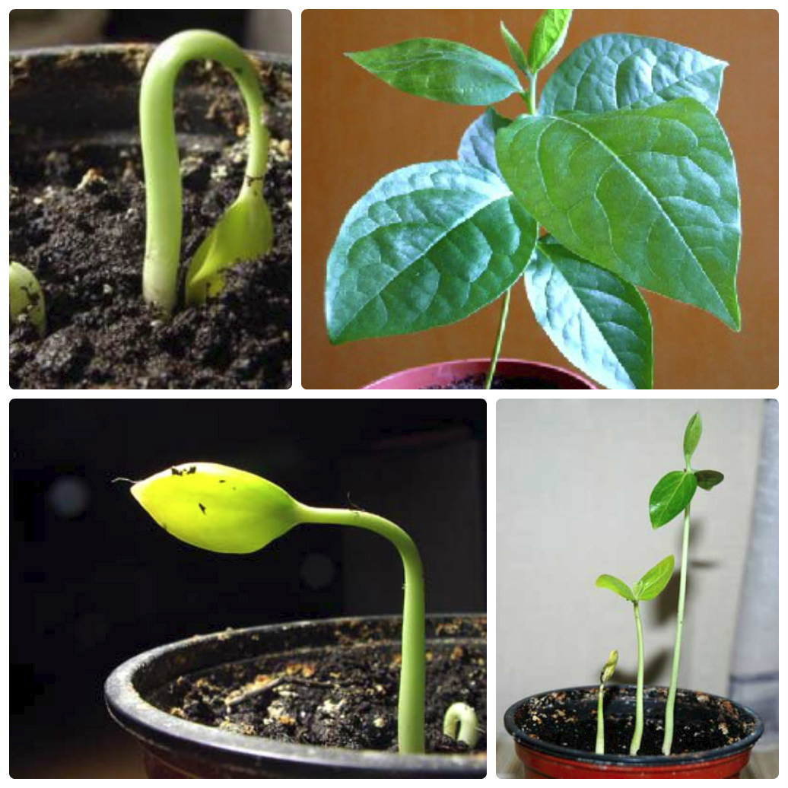
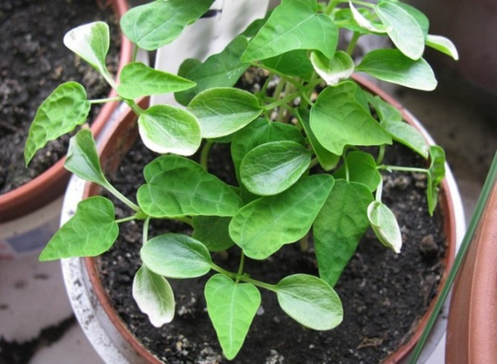
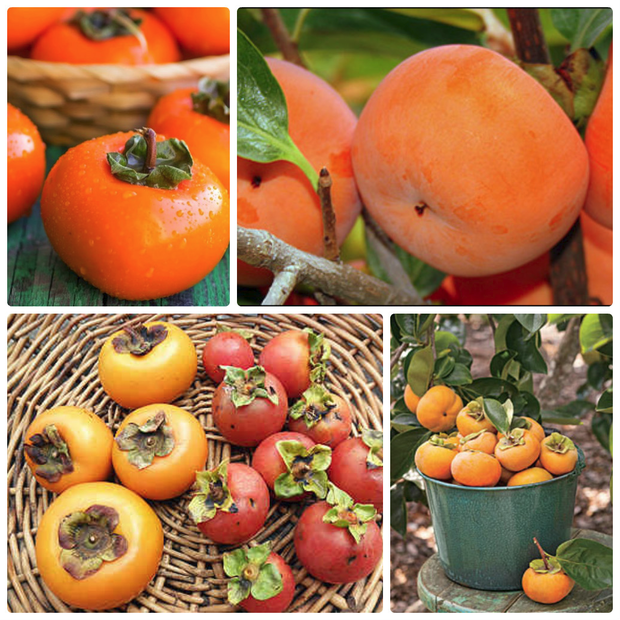

| Главная | Как вырастить лимон | Как вырастить киви | Как вырастить хурму | Как вырастить авокадо | Как вырастить манго |
Плоды хурмы содержат витамин С, железо, яблочную и лимонную кислоту, кальций, медь, марганец. Хурму часто едят не только как самостоятельный десерт, но и в составе блюд — салатов, йогуртов, джемов, желе и пудингов. Зимой, когда особенно хочется вкусных и полезных фруктов, домашняя хурма будет как нельзя кстати.
1. Косточки из съеденной ягоды нужно промыть и просушить. Перед посадкой в грунт семена обязательно нужно обеззаразить, опустив их на 48 часов в раствор перманганата калия.
2. Сухую косточку следует поместить в горшок с почвой на глубину 2 сантиметра, накрыть целлофановой пленкой и поставить в теплое место.

Ростки появляются уже через две недели после посадки. Горшок, накрытый целлофаном, нужно проветривать и поливать. Когда появится росток, целлофановую пленку можно снять. Когда из земли покажутся первые ростки, пленку нужно снять с горшка, а ростки пересадить в почву.
Также проращивать хурму можно в вате. Необходимо обернуть каждую косточку во влажную вату, поместить в целлофановый пакет в теплое место. Пакет нужно открывать, чтобы свежий воздух поступал к семенам, а лишняя влага испарялась.
По мере просыхания ваты ее необходимо смачивать водой.

3. После всходов ростков створки косточек обязательно нужно удалить иголкой или маникюрными ножницами, чтобы растение могло развиваться.
4. Росток хурмы быстро увеличивается в длине, достигая 15 сантиметров. Поэтому побеги хурмы необходимо регулярно пересаживать в просторную емкость, чтобы растение не погибло от недостатка места.

5. Летом деревце необходимо поместить в хорошо освещенное место во дворе или на балконе. Чтобы листья не получили ожог на солнце, их нужно «приучать» к солнечным лучам постепенно.
В период вегетации 2 раза в месяц следует подкармливать растение органическими и минеральными удобрениями. Осенью горшок с хурмой нужно перенести в погреб, предварительно накрыв грунт слоем влажных опилок.
В феврале-марте нужно произвести перевалку, полить и поставить на освещенное место. Молодые сеянцы формируются в деревца. На уровне 0,3-0,5 м от корня необходимо произвести прищипку, чтобы деревце разветвилось.
Оставить нужно 3 верхушечных побега, а когда они достигнут 30 см, их нужно прищепить для формирования ветвей второго порядка. Таким образом, можно регулировать густоту кроны путем прищипки растущих верхних веток.
В комнатных условиях хурма вырастает до 1,5 метров. Первые цветы, а потом и плоды на дереве хурмы появляются на третий год летом.

Подкармливать деревце следует натрием, калием, фосфором, микроэлементами в составе сбалансированного удобрения или компостной вытяжки.
Зимой хурму необходимо содержать в прохладном помещении (при средней температуре +5˚С), регулярно поливать водой комнатной температуры, а листья дерева — опрыскивать.
Совет. Нужно следить за объемами воды для полива — чрезмерное увлажнение может привести к гибели дерева хурмы.
Когда на дереве появляются плоды, не стоит переносить его в теплое место. Низкие температуры благоприятны для плодов — так они быстрее станут сладкими и потеряют неприятную вязкость.